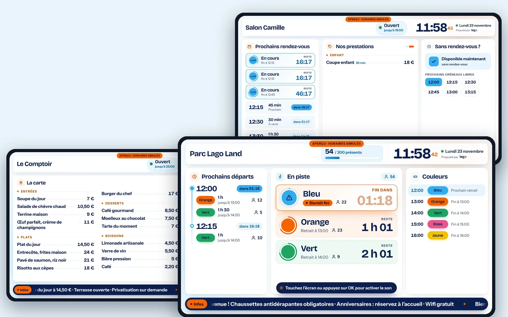
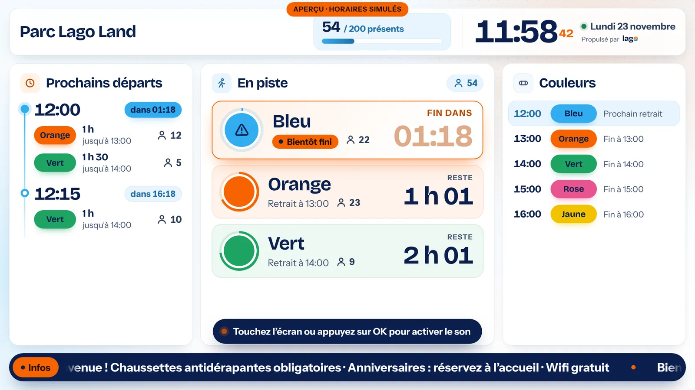
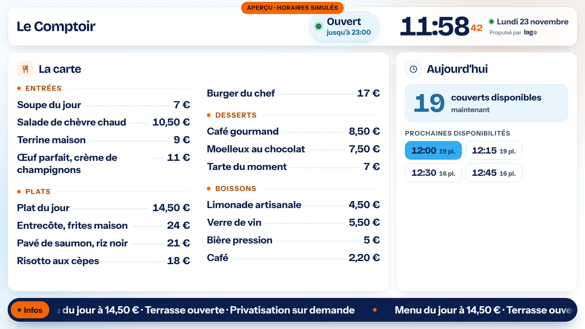
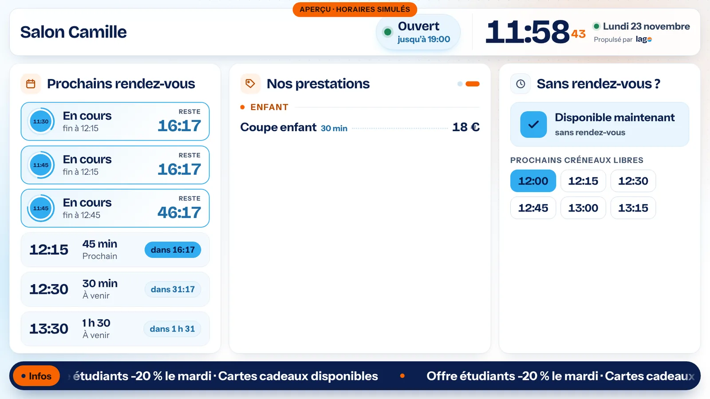

Une télé à l’accueil, et vos clients savent où ils en sont
Lago pilote l’écran de votre accueil : sessions en cours avec compte à rebours, prochains départs, carte et places disponibles, ou rendez-vous du jour. Une télé, un code, et tout se met à jour tout seul.


Capture réelle de l’écran TV de Lago, avec des horaires simulés.
Loisirs : le compte à rebours de chaque session
La télé affiche les bracelets en piste avec le temps restant, les prochains départs et les sessions qui viennent de se terminer. À la fin, un carillon retentit et une annonce vocale prévient les joueurs.
- Compte à rebours et couleur de chaque bracelet
- Carillon et annonce vocale à chaque fin de session
- Avertissement quelques minutes avant la fin, en option


Capture réelle de l’écran TV de Lago, avec des horaires simulés.
Restaurant, bar, boutique : la carte et les places libres
La télé montre votre carte avec ses prix, repris de votre catalogue, ainsi que les places disponibles et les prochaines disponibilités. Vous choisissez les rubriques à afficher.
- Carte et prix repris du catalogue
- Places disponibles et prochaines disponibilités
- QR code vers votre page de réservation, en option


Capture réelle de l’écran TV de Lago, avec des horaires simulés.
Salon, institut : les rendez-vous du jour, sans nom
La télé affiche les prochains rendez-vous sans le nom des clients, vos prestations avec leurs tarifs et les créneaux libres pour les clients sans rendez-vous.
- Rendez-vous du jour, sans nom de client
- Prestations et tarifs repris du catalogue
- Créneaux libres sans rendez-vous


Capture réelle de l’écran TV de Lago, avec des horaires simulés.
Votre écran, à votre image
Votre logo
Le logo de l’établissement, avec une version claire pour le fond sombre.
Fond clair ou sombre
Choisissez le thème qui va avec votre accueil.
Texte défilant
Un message en bas de l’écran : menu du jour, consigne, offre du moment.
Contenu signé
La télé refuse tout contenu modifié : personne ne peut y afficher autre chose.
Le vrai logicielLes écrans montrés sont des captures réelles de Lago.
Caisse conformeClôtures scellées, archives et attestation de l’éditeur.
Vos données restent à vousNi revendues, ni utilisées pour de la publicité.
Toujours à jourMises à jour automatiques, sans rien installer.
Vos questions
Quel matériel faut-il ?
+
Une télé avec un navigateur, ou une tablette ou un ordinateur branché à l’écran. Il suffit d’ouvrir une page web : aucune application à installer sur la télé.
Comment associer la télé ?
+
Dans Lago, activez l’écran TV : un code s’affiche. Sur la télé, ouvrez la page de l’écran, tapez le code, puis choisissez « Plein écran ». Un lien et un QR code sont aussi proposés pour une tablette.
La télé affiche-t-elle des données sur mes clients ?
+
Non. Elle ne reçoit que des horaires, des durées et des nombres de personnes, avec la carte et les prix de votre catalogue. Le contenu est signé par Lago : la télé ignore tout contenu modifié.
Faut-il garder Lago ouvert ?
+
Oui, sur au moins un appareil, la caisse par exemple : c’est lui qui met l’écran à jour, après chaque enregistrement et au plus tard toutes les 5 minutes. Vos appareils doivent aussi être reliés en ligne.
L’annonce vocale se lance-t-elle toute seule ?
+
Les navigateurs demandent d’autoriser le son : il suffit de toucher l’écran de la télé, ou d’appuyer sur OK, une fois à l’installation. Le carillon et l’annonce concernent l’écran des loisirs.
Peut-on voir le résultat avant d’installer la télé ?
+
Oui. Dans Lago, « Voir l’aperçu » ouvre l’écran avec des horaires simulés, sans rien brancher.
Voyez-le en vrai, sur vos activités.
Une démonstration gratuite et sans engagement.
Les autres fonctionnalités
Caisse
Une caisse tactile rapide, avec fidélité, remises et ticket conforme.
En savoir plusPlanning et réservation
Créneaux de 15 minutes, réservations, événements et réservation en ligne.
En savoir plusContrôles et conformité
Contrôles de sécurité en PDF, clôtures scellées et attestation de caisse.
En savoir plus